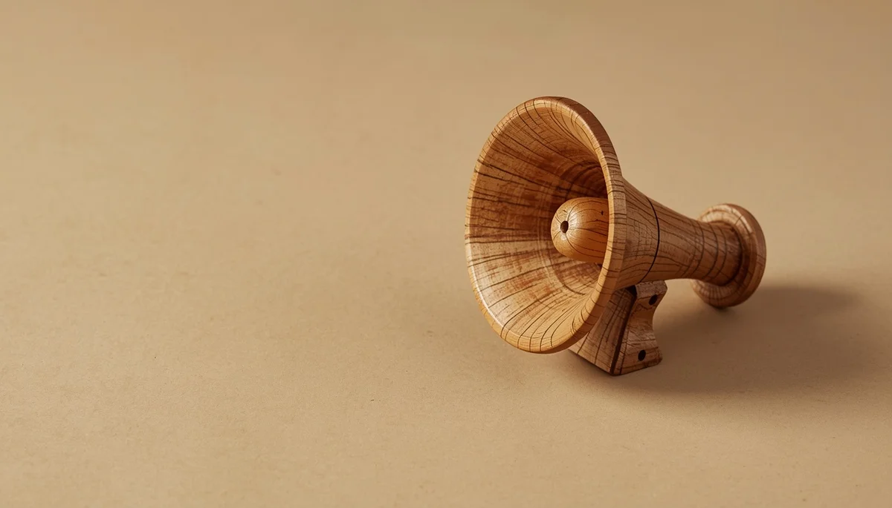

Prevención del bullying y bienestar emocional: cultivando entornos seguros
El bienestar emocional en la infancia y la prevención del acoso escolar requieren una mirada atenta, escucha activa y la construcción de redes de apoyo sólidas entre familias y centros educativos. Comprender las dinámicas relacionales nos ayuda a actuar antes de que aparezca el conflicto grave, fomentando la empatía y la seguridad en los más pequeños. He reunido aquí una guía serena para acompañar la convivencia escolar con respeto. Pincha en cada tarjeta para profundizar en cada tema.
Crear un refugio de confianza
Fomentar un espacio seguro en casa donde los niños puedan expresar sus miedos y vivencias cotidianas sin temor a ser juzgados ni culpabilizados.

Detectar cambios sutiles
Aprende a reconocer las señales físicas, los cambios de humor repentinos o la resistencia a acudir al colegio que pueden indicar malestar oculto.
Educar en el respeto a la diferencia
Sembrar valores de convivencia pacífica, enseñando a valorar la diversidad y a rechazar cualquier forma de exclusión o burla entre iguales.

Herramientas de autodefensa verbal
Dotar a la infancia de recursos comunicativos y posturas firmes que refuercen su seguridad personal ante situaciones incómodas o de presión social.

Alianzas firmes con el centro
Construir canales de comunicación fluidos y constructivos con el equipo docente y de orientación para actuar de forma coordinada y rápida.
Acompañamiento digital seguro
Supervisar el uso de dispositivos y redes sociales, educando en la responsabilidad digital y el respeto en entornos virtuales y de mensajería.

El poder de romper el silencio
Enseñar a los niños que observar el acoso sin actuar perpetúa el problema, fomentando el valor de comunicar la situación a un adulto de confianza.
Sanar y reconstruir la autoestima
Acompañar emocionalmente los procesos de recuperación, validando sus sentimientos y devolviéndoles la confianza en sus propias capacidades.